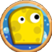
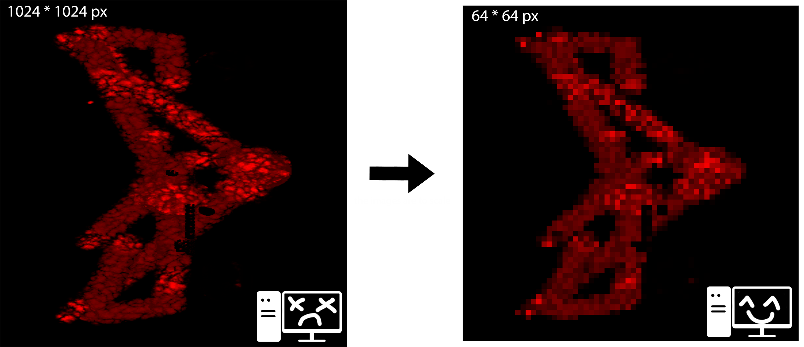

Sponge
Order from the Montpellier town hall

Order from the Montpellier town hall

As sponges, we scrub the floor as we move, automatically cleaning it. But we can also soak up water from sinks and spit out bubbles to clean the floor and even defeat monsters!
We also have an ultimate ability that charges by defeating enemies. Once ready, it lets us launch a giant bubble that explodes on the ground, cleaning a large area and dealing area-of-effect damage.

Sponge was a project commissioned by the city of Montpellier for their annual event “Cœur de Ville en Lumière.” The goal was to create a 2-player game lasting 3 minutes, projected onto the wall of the Agora amphitheater in Montpellier.
Players control sponges that must clean the wall while fighting off monsters that keep trying to make it dirty again. The objective is to score as many points as possible for the leaderboard.
It was a side project developed alongside our final year project.

Points are earned by having the cleanest surface area on the wall.
To determine this, we analyze the RVT texture and calculate the percentage of visible dirt — pixel by pixel, for accuracy.
However, this method is quite heavy in terms of performance.
To optimize, we use a smaller texture that mirrors the RVT, allowing for much lighter calculations and preventing lag on the hardware provided for the event.
Instead of checking 1 048 576 pixels on a 1024x1024 texture for high in-game quality, we only check 4 096 pixels using a dedicated 64x64 texture for calculations.
This saves 1920 pixels from being processed. While it slightly reduces precision, the performance gain makes it well worth it.